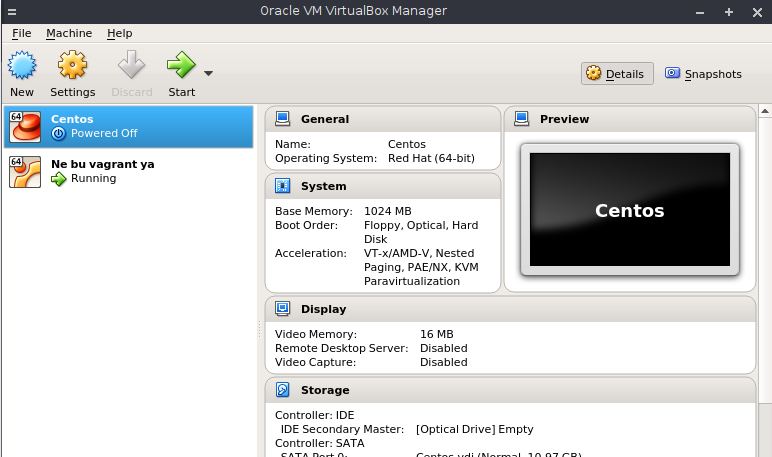

Neymiş bu Vagrant
Written on
Kısaca Vagrant Nedir?
Kendi anladığım şekilde anlatmam gerekirse Vagrant hazırladığınız text scriptleri ile sanal sunucular oluşturabileceğiniz otomatize bir araçtır.
Ne İşe Yarar?
Oluşturduğunuz scriptler ile herhangi bir ortamda, bu ortam müşteri ortamı veya kendi ortamınız da sizler için hazır bir makine inşa eder. Tabi bir de ansible ile birleştirirseniz tadından yenmez sanırım. Tabi ki bunda özgürsünüz projenizin içerisinde ki bir sh dosyasını da çalıştırabilirsiniz.
Birkaç Terim
Provider : Sisteminizin hangi sanallaştırma platformu üzerinde çalıştırılacağını belirtir. Örn: Virtualbox, Vmware, Docker
Box : Binlerce kullanıcı tarafından oluşturulmuş özel kutulardır. Bu kutuları scriptiniz içerisine yazarsanız Vagrant bunu sizin için indirir ve script içerisinde belirttiğiniz özellikler üzerinden çalışmasını sağlar. Örnek vermek gerekirse pfsense box'ını indirirseniz sizlere nur topu gibi bir pfsense makinesi verecektir.
Provision : Sistem kurulduktan sonra çalıştırılacak script vs şeyleri yazdığımız yer ( en azından benim anladığım :D )
Next, Next, Next
Debian based sistemler üzerinde
apt install vagrant
Tabi ki sadece vagrant kurmak yetmeyecektir. Kullanacağınız provider'ı da sisteminize indirmeniz gerekmektedir. Ben virtualbox kullanacağım.
Hadi Başlayalım.
Projeyi oluşturacağınız klasöre gittiğinizde burada vagrant init yaparsanız sizin için bir vagrantfile oluşacaktır. İçerisini temizleyerek aşağıda ki satırları ekleyelim.
Vagrant.configure(2) do |config|
config.vm.define "nebuvagrantya" do |nbv|
nbv.vm.box = "ubuntu/trusty64"
nbv.vm.network :private_network, ip: "10.0.0.2"
nbv.vm.hostname = "nebuvagrantya"
Burada ki kodları açıklamak gerekirse Vagrant.configure(2) do |config| yazdığımızda kalın yazdığım kısım aslında bir değişken olarak davranıyor.
Altında Vagrant üzerinde bir makine açacağımızı ve bunu kısaltma olarak nbv olarak çağıracağımızı belirtiyoruz. ( nbv )
Diğer satırlarda bu makinemizin ubuntu kutusunu kullanacağını belirtiyoruz. Bu kutunun hangi ip alacağını ve private networkde olacağını belirtiyoruz. Ayrıca bu makinenin Virtualbox üzerinde ki ismini de belirtmiş oluyoruz. Fakat bu bize yetiyor mu tabi ki yetmiyor. Hadi biraz daha sanal makinemizin ayarları ile oynayalım.
Projemize provider olarak virtualbox ekleyelim.
Vagrant.configure(2) do |config|
config.vm.define "nebuvagrantya" do |nbv|
nbv.vm.box = "ubuntu/trusty64"
nbv.vm.network :private_network, ip: "10.0.0.2"
nbv.vm.hostname = "nebuvagrantya"
nbv.vm.provider "virtualbox" do |vb|
vb.name = "Ne bu vagrant ya"
vb.name = "Ne bu vagrant ya"
vb.memory = "512"
vb.cpus = "2"
vb.customize ["modifyvm", :id, "--vram", "32"]
end
Burada VBoxmanage kullanarak sanal makinemizin ismini, ram miktarını, ekran kartı ram miktarını ve işlemci sayısını belirttik. Ayrıca provision kısmında shell üzerinde proje klasörümüzde bulunan nginxyukle.sh dosyasını çalıştıracağız. İsterseniz provisioning kısmında isterseniz direkt olarak ansible çalıştırabilirsiniz.
Örnek kod:
vb.vm.provision "ansible" do |ansible|
ansible.playbook = "nginxyukle.yml"
ansible.verbose = "v"
end
Sanal makinenizin çok daha fazla ayarını değiştirmek isterseniz eğer aşağıya referans sayfasını ekleyeceğim.
Vagrant dosyamızın son hali
Vagrant.configure(2) do |config|
config.vm.define "nebuvagrantya" do |nbv|
nbv.vm.box = "ubuntu/trusty64"
nbv.vm.network :private_network, ip: "10.0.0.2"
nbv.vm.hostname = "nebuvagrantya"
nbv.vm.provider "virtualbox" do |vb|
vb.name = "Ne bu vagrant ya"
vb.name = "Ne bu vagrant ya"
vb.memory = "512"
vb.cpus = "2"
vb.customize ["modifyvm", :id, "--vram", "32"]
end
nbv.vm.provision :shell, path: "nginxyukle.sh"
end
end
Hadi çalıştıralım artık. Terminalinize
vagrant up
Yazarsanız eğer daha önce aynı box'ı indirmemişseniz aşağıda ki gibi bir ekran göreceksiniz.
Not: Nginxyukle.sh dosyanızı oluşturmayı unutmayın :)
İşlemler bittikten sonra aşağıda ki gibi bir ekran göreceksiniz
Artık herşey hazır.
Kullanabileceğiniz komutlar:
| Komut | Açıklama |
|---|---|
| vagrant ssh | Eğer bir tane makineniz bulunuyorsa bu makineye direkt olarak ssh üzerinden erişir. |
| vagrant destroy | Makinenizi destroy eder. |
| vagrant global-status | Makineleriniz hakkında sizlere bilgi verir. |
| vagrant reload | Makinenizi update eder |
Komutlar ile ilgili aşağıda referans sayfası vereceğim. SSH bağlantısı yapalım ve yazıyı sonlandıralım.
Evet artık nur topu gibi bir sanal makinemiz var. 
Vagrant Kutuları İçin
Vagrant üzerinde kutuları kullanabileceğinizi söylemiştik. Kullanıcılar tarafından oluşturulmuş public kutulara ulaşmak için aşağıda ki linki kullanabilirsiniz.
{kind=link}